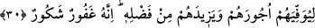
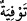
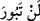
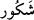

bulur. İrşâd’da der ki burada “
” ifâdesi ticaretin sıfatıdır. Bu ticaretin diğer
ticaretler gibi kâr-zarar riski taşımadığına delâlet etmesi için böyle bir niteleme
yapılmıştır. Çünkü bu ticârette fânî olan para ile emek ve amelle de bâkî olan cennet
satın alınmaktadır. Cömertlerin en cömerdi olan Allah tarafından onların bu umutlarını
haber vermek ise onların umut ve matluplarının hâsıl olacağına kesin bir vaaddir.
30. Çünkü Allah, onların mükâfatlarını tam öder ve lütfundan onlara fazlasını da
verir. Şüphesiz O, çok bağışlayan, şükrün karşılığını bol bol verendir.
“Çünkü Allah, onların mükâfatlarını” amellerinin sevabını “tam öder ve lütfundan”
cömerdlik ve kereminden, rahmet hazînelerinden “onlara fazlasını da verir.” Yâni
onların sevaplarını arttırır. “Şüphesiz O,” onların hatâ ve günahlarını “çok bağışlayan,
şükrün” yâni tâatlerinin “karşılığını bol bol verendir.”
“
”, tam olarak/tamamını vermek demektir. Ecir, amelin sevâbıdır. Buradaki lam
harf-i cerri (önceki âyetteki) “
” fiiline mütealliktir. Yâni bu ticarette kesâd olmaz.
Bu ticarette Allah nezdinde harcama yapılır. Allah bu kullara Kur’an okumaları, namaz
kılmaları ve zekât vererek Allah yolunda harcama yapmalarına karşı amellerine, niyet
ve ihlâslarına göre ecirlerini eksiksiz verecektir. Bu durumda “
” kelimesi üzerinde
vakıf yapılmaz.
Allah Teâlâ cömertliğinden, fazl-ı kereminden ve rahmet hazînelerinden dilediği kadar
amel esnasında onların hiç aklına gelmeyen ve gerçekten hak etmedikleri ecri kendi
katından verir. Bu, Allah’ın mahzâ lütuf ve keremidir. Allah Teâlâ’nın kıyâmet günü bu
kulları şefâat makamına getirmesi de onun fazl-ı keremidir. Onlar bu sâyede isyan ve
günahları sebebiyle kendilerine cehennem vâcip olan yakın akrabalarına ve diğer
Müslümanlara da şefâat edeceklerdir.
Bahru’l-ulûm’da der ki: Allah Teâlâ onlardan sâdır olup, örtülmesi uygun olan
ayıpları örter. Bunları onların kalplerinden ve yazıcı meleklerin dosyalarından siler. et-
Te’vîlâtü’n-Necmiyye’de der ki: Allah Teâlâ ziyâde bağışlayıcıdır. Onların kulluktaki
kusurlarını bağışlar. Kusurlarına rağmen, rubûbiyet fazlıyla onların çalışmalarının
karşılığını kat kat verir.
Ebû’l-Leys der ki, şükür üç türlüdür: Aşağı durumda olanın şükretmesi, şükredeceği
zâta itâat etmesi ve ona muhâlefet etmemesidir. Kendi dengi olanın yine dengine
şükretmesi ödül ve mükâfât ile olur. Üst ve üstün olanın şükretmesi ise kişiden gelen az
bir şeye râzı ve memnûn olmasıdır. Bazıları der ki “
” az amele çok hayır ve iyilikle
mukabele eden, sayılı günlerde yapılan amele hiç kesilmeyen nimetlerle karşılık
verendir. Kim Allah’ın “Şekûr” olduğunu bilirse onun nimetine şükreder, O’na itâat